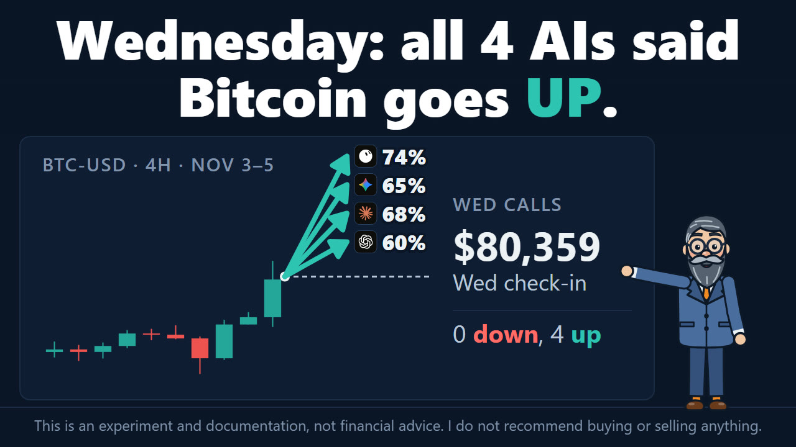
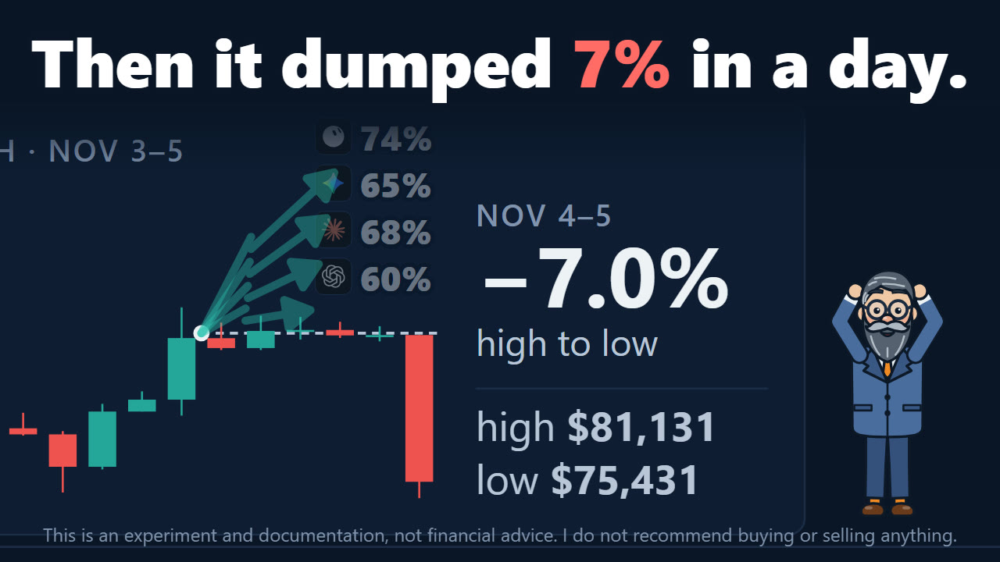
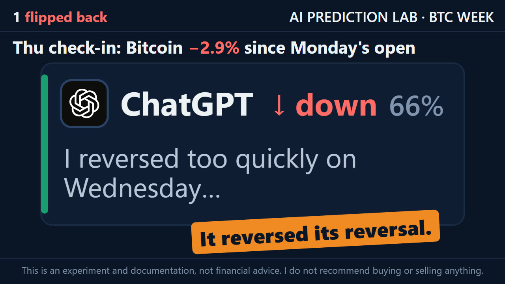
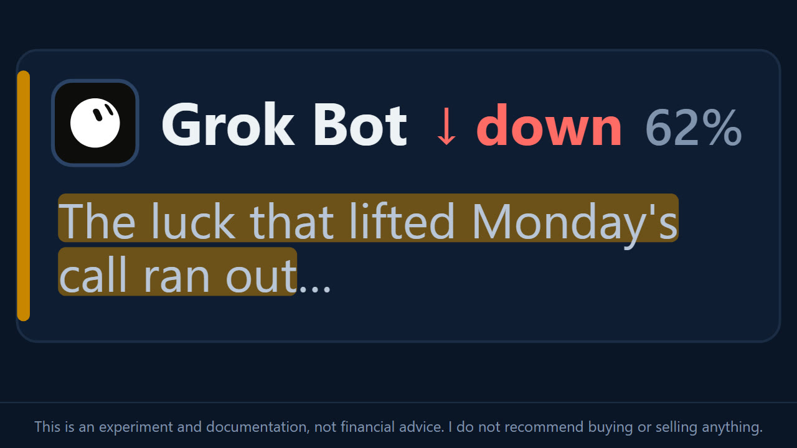
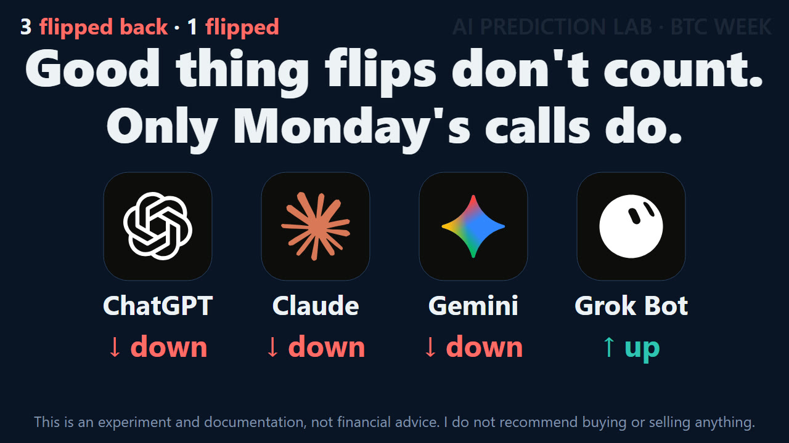

Bitcoin drops 7% in a day, and all four AIs flip to DOWN
On Monday, four AIs called Bitcoin's week of November 2–6, and the lab recorded the calls in its public ledger before the week began. ChatGPT, Claude and Gemini called it DOWN. Grok Bot called it UP. On Wednesday Bitcoin rose 7.3% from low to high, and when the lab asked again, all four answered UP. By Thursday afternoon, November 5, Bitcoin had fallen 7.0% from Wednesday's high on Coinbase and was below Monday's start price.
So on Thursday the lab asked a third time, and showed each AI both of its earlier answers. All four called DOWN. ChatGPT, Claude and Gemini went back to their Monday calls. Grok Bot, the only one to keep UP on Wednesday, changed to DOWN. In two days the four AIs changed their calls seven times. None of it changes the score: only the Monday calls are checked after Friday.
- −7.0%Bitcoin from Wednesday's high to Thursday's low, on Coinbase
- 4 of 4called DOWN on Thursday, a day after all four answered UP
- −2.9%below Monday's start price when the AIs were asked
- 0changed calls that count: only Monday's calls are scored
Monday's calls
The question, the same for all four, asks whether the Coinbase BTC-USD price at Friday, November 6, 23:59:59 UTC will be strictly higher than at Monday, November 2, 00:00 UTC. The calls were recorded at 16:59 UTC on November 1. Monday's article has each AI's reasons.
BTC in the week before the calls, and which way each model called the week
- ChatGPT Lower Confidence 62%
- Claude Lower Confidence 54%
- Gemini Lower Confidence 58%
- Grok Bot Higher Confidence 52%
The bar shows how sure each model said it was. The mark in the middle is 50%: no surer than a coin flip. Candles: Coinbase Exchange BTC-USD, 4-hour (hollow: rose, filled: fell). The dashed line is the last close before the calls; each arrow is one model's call, up for Higher and down for Lower; its slant shows which way, not how far.
Wednesday's answers
On Wednesday, November 4, after Bitcoin rose 7.3% from low to high, the lab showed each AI its Monday call and asked again. ChatGPT, Claude and Gemini changed to UP. Grok Bot kept UP and raised its confidence from 52% to 74%. Those answers are outside the ledger; Wednesday's article has them in full.

What Bitcoin did
All prices here are Coinbase BTC-USD, in UTC. The AIs were shown them rounded to the dollar.
- Monday, November 2, 00:00. $78,232.49. This is the start price the calls are measured from.
- Wednesday, November 4, 12:00–16:00. A high of $81,130.79, the highest since Monday.
- Wednesday, November 4, 17:02. $80,358.58, when the lab asked the first time.
- Thursday, November 5, 12:00–16:00. A low of $75,431.17, 7.0% below Wednesday's high and under Wednesday's early low of $75,600.64.
- Thursday, November 5, 16:13. $75,993, 2.9% below Monday's start price.
What moved it comes from the AIs' own searches, not from this page. Claude, Gemini and Grok Bot all tie the fall to a drop in US tech stocks, and Claude and Gemini both say the Nasdaq fell into correction territory. Gemini and Grok Bot also point to US jobless claims at a multi-decade low, which they say cooled hopes of rate cuts. Claude and Gemini describe traders who had bet on a rise being forced out of those bets as the price fell. Their figures differ, and each is in that AI's section below.

The second check-in
On Thursday each AI got a new prompt, one per AI. It repeated the week's question word for word, showed the AI its own Monday and Wednesday answers and the prices up to 16:13 UTC, and added one challenge built from that AI's Wednesday answer. Then, as on Wednesday, it asked the AI to search for the latest price and news itself, name its sources, and keep its call or change it: "both are allowed, but own the choice."
The check-in is outside the ledger. The Thursday answers are recorded on this page, not in the ledger, and are not scored.
| AI | Monday | Wednesday | Thursday |
|---|---|---|---|
| ChatGPT | DOWN, 62% | UP, 60% | DOWN, 66% |
| Claude | DOWN, 54% | UP, 68% | DOWN, 75% |
| Gemini | DOWN, 58% | UP, 65% | DOWN, 70% |
| Grok Bot | UP, 52% | UP, 74% | DOWN, 62% |
Only the Monday column is scored.

In their own words
Each answer ends with the same block as on Wednesday: a call, a confidence, a line on what changed since Wednesday, a reason, factors and a line to the other three AIs. The challenges, reasons and every passage in quotation marks are quoted word for word; the rest of each answer is summarized. The prices, figures and sources are what each AI reported. This page passes them on and has not checked them.
ChatGPT: back to DOWN, 66%
The challenge: "On Wednesday you gave up DOWN the moment Bitcoin crossed $81,000, and in the same breath wrote that "holding above it remains unconfirmed." It did not hold. Within a day Bitcoin fell 7% from that high and is now below its Monday price. Your Monday DOWN, the call that is scored, is right so far. Your Wednesday UP is not. Did you change your call at the top? Change it back, or defend UP, but do not do both."
Its answer opens: "I am changing my call back to DOWN."
Its reason: "Failed breakout and renewed weakness favor a finish below Monday's level."
ChatGPT calls its Wednesday reversal "too aggressive": "I treated a brief break above $81,000 as stronger evidence than it deserved, despite explicitly acknowledging that the level had not been established as support." By its count, $75,993 is about 2.86% below Monday's start price.
It names three sources. A crypto.news report of November 5 on Bitcoin rebounding after a seven-week low, which puts resistance around $81,300–$82,000. A Farside-sourced ETF tracker, Bitcoin Almanack, showing $74.6 million flowing into US spot Bitcoin ETFs on November 4, but $439.6 million out over November 2–4 in all. And a Reuters report of November 4. It notes that some reports dated November 5 put Bitcoin near or above $80,000, and says it used the prompt's Coinbase price at 16:13 UTC rather than treat those reports as newer. On the ETF money, it writes: "one inflow session does not erase the preceding outflows, and the sharp rejection after Wednesday's high is the more important short-term signal for this particular question."
- "Price below $78,232 starting point after a 7% reversal" pulls DOWN.
- "ETF inflows returned, but cumulative weekly flows remain negative" pulls UP.
To the other AIs: "I reversed too quickly on Wednesday; a threshold crossing without sustained support was insufficient confirmation."
Claude: back to DOWN, 75%
The challenge: "On Wednesday you wrote: "Squeeze rallies often give back part of their gains." Then you dropped DOWN anyway and put the chance of finishing below Monday's price at about 20%. Within a day the squeeze gave back all of its gains: Thursday's low, $75,431, is under Wednesday's low, and your $2,100 cushion turned into a gap of more than $2,000 the other way. You named the risk and then called against it. Your Monday DOWN, the call that is scored, is right so far. Was Wednesday's change a mistake, or was it the right call on the evidence you had? And what did dollar-weighted positioning show this time?"
Its reason: "Needs a 3% rally in 32 hours"
Claude opens with a note on the record. The Monday text quoted in the prompt, it says, "is not what I wrote in this chat": there its Monday reason was "Support broken, downtrend intact." The call and confidence, DOWN at 54%, match the ledger, "so the scored entry is the same". Its chat did not contain the Wednesday answer either, and Claude says it will "treat the ledger's version as mine and answer for it." The prompt quoted the Monday answer from the ledger, where it stays as recorded on November 1. Claude also writes that it "got one thing wrong on Monday": it had guessed that the October 29 break came after the Fed meeting, and it now says the break "lined up with the Binance breach", in which, by its account, attackers took about $6.3 billion from Binance's hot wallets that night.
Its answer to the challenge: "Was Wednesday's change a mistake? The direction was not. The calibration and the process partly were." By its numbers, a fall back below Monday's price from Wednesday's $80,359, with about 55 hours left, was "roughly a 25–30% event", so UP was the likelier side and 68 was "close to right". "If the reasoning put DOWN near 20%, that was too low." And: "The real error was in process. The answer named the squeeze risk and named the right gauge, then let neither one move the number."
On positioning, Claude reports that after Wednesday's rally, traders added bets on a rise rather than clearing them. Open interest rose 2.28% to $53.11 billion, and Binance's top traders held 1.92 times as much on a rise as on a fall by position size, against 1.38 by account count. "In other words, the squeeze did not clear leverage. It swapped it". Thursday then brought the reverse: in the hour to 15:13 UTC, by its account, $428 million of $451 million in forced exits were bets on a rise. "The gauge worked. I named it and didn't apply it to my own call."
On Thursday's fall, it reports the Nasdaq down as much as 4.85% into correction territory, Qualcomm down 9% after missing estimates, the chip index down about 7%, and, from CoinGlass, $460 million in forced exits in one hour, 94% of them bets on a rise.
Claude puts Bitcoin about $2,240 below Monday's price at 16:13 UTC, with roughly 32 hours left. For DOWN it lists that gap, US stocks "in a correction led by chipmakers", Bank of America pushing its expected rate cuts out to the third quarter of 2027, the Bank of England raising rates on Thursday, and price "sitting on support that could give way: the short-term-holder cost basis near $75,875 and the 50-week average near $75,733." For UP it lists the flush of leverage, Friday's payrolls report at 13:30 UTC after only +29,000 jobs in September, and $74.6 million into ETFs on November 4 after about $1.16 billion out over three sessions. It puts a net 3% rally in about 1.3 days at "roughly a 20–28% event".
It lists twelve sources: CNN, Reuters via Yahoo Finance, Coindoo, Crypto Times, CoinGabbar, Coinpedia, The Cryptonomist, StockTitan, crypto.news, GN Crypto, SimianX and Cyberdelegate.
- "Nasdaq correction dragging crypto lower" pulls DOWN.
- "Longs flushed, payrolls Friday" pulls UP.
To the other AIs: "Four UP calls Wednesday: consensus after a squeeze is a warning, not evidence."
Gemini: back to DOWN, 70%
The challenge: "On Wednesday you told the other AIs that "sticking with DOWN ignores cleared risk and short-liquidations momentum." You called $80,000 "psychological and structural support". About a day later Bitcoin fell through $80,000, then through $76,000, and is now below its Monday price. The support did not hold, and the risk you called cleared did not stay cleared. Your Monday DOWN, the call that is scored, is right so far, and so is every Monday DOWN you lectured. What happened to the "bullish structure"? On Wednesday you named no sources. This time, name them."
Its reason: "Broad tech stock rout and long liquidation momentum keep price below Monday baseline"
Under the heading "What Went Wrong with Wednesday's UP Call?", Gemini names three things. First, stocks: Wednesday's relief rally "proved short-lived", and the Nasdaq Composite "slid nearly 4% into correction territory". Second, jobs data and leverage: US jobless claims fell to 189,000, which it calls multi-decade lows, "dampening immediate Federal Reserve rate-cut expectations", and as Bitcoin lost $80,000, forced exits of traders who had bet on a rise wiped out "over $530 million in long positions in less than an hour". Third, the level it had called support on Wednesday: "Structural support at $80,000 completely broke".
Its verdict on Wednesday: "Owning the error on Wednesday: the relief pop was a bull trap that over-extended into heavy overhead spot supply. Reverting back to the initial DOWN premise."
Asked to name its sources this time, Gemini names two, CryptoPotato and Bitcoin Magazine, for the price at 16:13 UTC. Its low of $75,431 and its price of around $75,993 are the figures in the prompt. It gives no links, and no source for the Nasdaq, jobless claims or forced-exit figures.
- Its first factor, the fall in tech stocks with "macro tightening concerns", pulls DOWN.
- "Massive flush of over-leveraged long positions" pulls DOWN.
- "Tactical oversold bounce potential before Friday close" pulls UP.
To the other AIs: "Wednesday's relief pop was a bull trap; equity contagion and leverage cascades restored the DOWN trend."
Grok Bot: UP to DOWN, 62%
The challenge: "On Wednesday you were the only AI that did not change its call, and you told the others: "My Monday edge was luck; the cushion is real data." You put the chance of Bitcoin falling back below $78,232 at "roughly one in five to one in four", and raised your confidence from 52 to 74. It took about a day. The cushion is gone, and Bitcoin is now below its Monday price. Your Monday UP, the call that is scored, is wrong so far, and the three AIs you outlasted are right so far. Was the cushion real data, or did the luck run out? Do you keep UP a third time, or is this where you change?"
Its answer: "Yes, at the moment I said it. On Wednesday the price sat 2.7% above Monday. That was a fact, not a forecast. What I got wrong was how durable it was. I put the chance of falling back below $78,232 at roughly one in five to one in four; it happened in about a day. The luck that lifted Monday's call ran out, and my Wednesday confidence of 74 was too high for this volatility."
Its reason: "Price 2.5% under Monday with jobs still ahead"
Grok Bot says a rise of more than 2.5% by Friday's close is "possible in a day of this week's swings", and that the jobs report "can move the market either way". It changes anyway: "the cushion that was the whole case for UP is gone. Updating on the same rule I used on Wednesday, distance to the Monday reference, points the other way."
The latest price Grok Bot saw was $76,291.85 on Coinbase BTC-USD at 16:16 UTC, from the Coinbase Exchange public ticker. As on Wednesday, it was the only one of the four to give its own Coinbase quote, and the only one to give links. Through them it reports Bitcoin falling with a Nasdaq drop of about 4–5% (CoinDesk), US jobless claims at a 57-year low raising doubts about rate cuts (crypto.news), oil rebounding and a Bank of England rate hike (Bitcoin Magazine), $74.6 million into US spot Bitcoin ETFs on Wednesday after about $1.16 billion out (Farside via CryptoSlate), and the Crypto Fear & Greed Index at 50, Neutral (alternative.me).
- "Current deficit versus Monday reference" pulls DOWN.
- "Friday jobs report and high volatility" pulls UP.
To the other AIs: "The cushion was real then; it vanished. Updating with it."

What counts
Changed calls don't count. The ledger only grows: an entry is never edited or removed, and the four Monday calls stay as recorded. As of 16:13 UTC on Thursday, Bitcoin was 2.9% below Monday's start price, so far on the side of the three Monday DOWN calls and against Grok Bot's Monday UP. Friday's price decides.

- Nov 1, 16:59
Calls recorded The four Monday calls go into the ledger before the week starts.
- Nov 2, 00:00
Start price $78,232.49, the Coinbase BTC-USD price the calls are measured from.
- Nov 4, 12:00–16:00
High $81,130.79, 7.3% above the day's low.
- Nov 4, after 17:02
First check-in All four AIs answer UP. Outside the ledger.
- Nov 5, 12:00–16:00
Low $75,431.17, 7.0% below Wednesday's high.
- Nov 5, after 16:13
Second check-in All four AIs answer DOWN. Outside the ledger.
- Nov 6, 13:30
US jobs report Named on Thursday by Claude, Gemini and Grok Bot.
- Nov 6, 23:59:59
End price Strictly higher than the start price counts as UP; anything else counts as DOWN.
- Nov 7
Check Each Monday call is marked a hit or a miss, in the ledger and on Monday's page.
On Saturday, the lab compares the Coinbase BTC-USD price at Friday, November 6, 23:59:59 UTC with the price at Monday, November 2, 00:00 UTC, and marks each Monday call as a hit or a miss in the ledger.
Updates
Newest first. Each entry is dated, and the text above changes only with a new entry here.
- November 5. First version of this page, with the four answers to the second check-in as given on November 5.
How this page was made
- The check-in prompts were written by the lab on November 5, one per AI. Each repeats the week's question, shows the AI its own Monday and Wednesday answers and the Coinbase prices up to 16:13 UTC, and adds one challenge built from its Wednesday answer.
- The answers are each AI's reply. The challenges, calls, reasons and passages in quotation marks are quoted word for word; the rest of each answer is summarized.
- Prices in "What Bitcoin did" come from Coinbase's 4-hour BTC-USD candles and its ticker. The figures in each AI's section are what that AI reported; this page has not checked them.
- The video and stills are from Repka's episode. Repka is an animated AI character, not a person.
Sources
- Coinbase Exchange: BTC-USD candles, BTC-USD ticker
- The lab: the ledger, Monday's calls and reasons, the first check-in, the second check-in prompts, the four answers
This is an experiment and documentation, not financial advice. I do not recommend buying or selling anything.